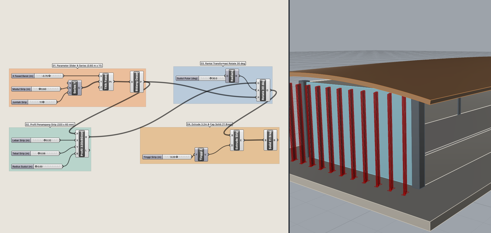
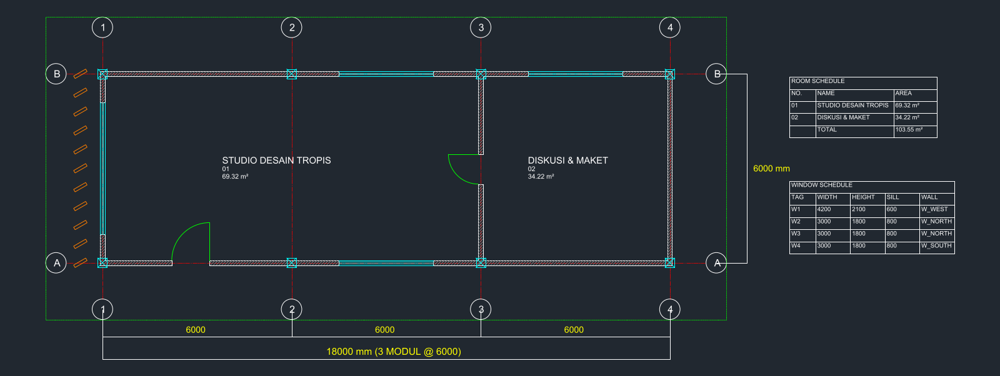
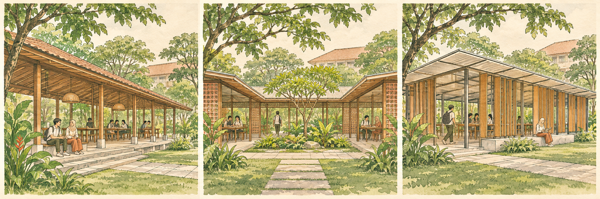

Buta Kurasi
- Mudah silau oleh visual permukaan
- Gagal mendeteksi cacat struktur & iklim
- Bingung saat ditanya alasan keputusan
KELOMPOK STUDI CIPTA LOKA • ARSITEKTUR UNIVERSITAS UDAYANA
Memahami alur kerja arsitektur lebih dulu, membedah cara kerja AI, MCP, Hermes Agent, serta software clone berbasis REA, lalu menerapkannya dengan kendali, etika, dan akuntabilitas seorang Decider.
Tujuh fase rantai kerja dari project brief hingga dokumentasi dan presentasi.
Membedah lapisan AI, protokol MCP ke 3D/CAD, Hermes Agent, dan software clone berbasis REA.
Jangan biarkan AI menentukan; literasi, batas hak cipta, dan etika profesi.
Penerapan nyata dari Solar Study, konsep tropis, parametrik hingga DED & web.
Nilai tambah manusiawi, kepekaan ruang, dan lima kompas mahasiswa.


127.0.0.1:8080)Tolong ringkaskan poin utama SNI pencahayaan alami & rasio overhang bangunan kampus tropis lembap untuk bahan evaluasi studio sore ini.
Ringkasan Studi Tropis (3 Poin Kunci):
channel:telegram -> /skills literasi "SNI pencahayaan alami & selubung fasad tropis"
read_file • browser
morluto/rea menyediakan 170 tools (terhubung ke Ghidra, Hopper, JADX & pengurai biner) untuk memetakan struktur berkas serta perilaku fitur aplikasi secara terukurIFC4, dan markup PDF yang langsung memiliki dukungan MCP sejak hari pertamaHermes Agent merangkum meeting klien, klasifikasi brief, & matriks referensi awal.
Survei kontur & regulasi lokal di lapangan; simulasi lintasan matahari & cuaca EPW dipercepat aplikasi web hasil AI.
Draf tabel luasan, kapasitas, & matriks kedekatan ruang; wajib cek standar SNI.
Eksplorasi benang merah gagasan ruang, karakter suasana, & respons iklim pasif.
Perbandingan alternative design, studi potongan, & komposisi massa tiga dimensi.
Otomasi geometri & komponen parametrik via MCP (SketchUp/Rhino/CAD) sebelum sinkronisasi BIM.
Gambar kerja DED, struktur, & MEP wajib presisi di Revit/CAD; presentasi klien dipercepat multi-image video generation & vibe coding web.

# Parameter fasad barat (meter)
lebar_fasad = 6.0
jarak_modul = 0.60
sudut_sirip = 30
jumlah_sirip = int(lebar_fasad / jarak_modul) + 1
posisi_x = [
round(i * jarak_modul, 2)
for i in range(jumlah_sirip)
] # diteruskan ke Rhino / SketchUp via MCPApakah keputusan ini lahir dari data tapak nyata, bukan asumsi mesin?
Literasi apa yang membuktikan opsi ini lebih baik bagi penghuninya?
Mampukah saya mempertanggungjawabkan setiap garisnya di lapangan?
Satu tautan membuka dek web interaktif 21 bagian secara utuh di ponsel atau laptop peserta, lengkap dengan unduhan buku pegangan PDF 12 halaman serta berkas asli definisi Grasshopper (.gh), model Rhino 8 (.3dm), dan gambar kerja AutoCAD MCP (.dxf).
https://archimades27.github.io/ai-arsitektur-udayana-2026/
Terima kasih • Pembahasan lengkap tersedia pada Handbook PDF Peserta • Ar. I Made Sucita Ariasandika (@archi.mades)
KEMBALI KE ATAS